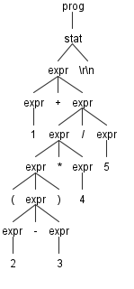
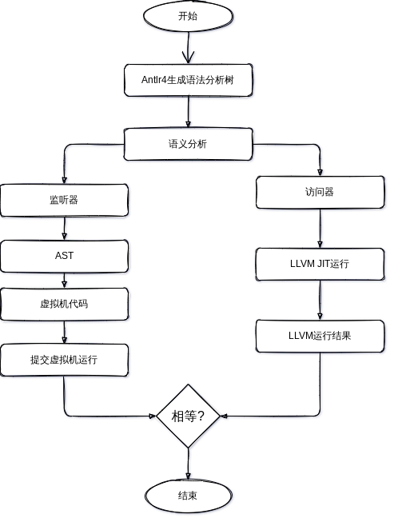

AntlrExpr README


说明文件
程序结构
.
├── bin
├── build.sh
├── CMakeLists.txt
├── doc
├── Doxyfile.in
├── Expr.g4
├── grammar
├── inc
├── LICENSE
├── main.cc
├── README.md
├── runtime
├── src
└── tool
编译指令
设置antlr编译器
- 设置java运行环境
- 下载antlr执行文件
- 设置环境变量
export CLASSPATH=".:${pwd}/bin/antlr-complete.jar:$CLASSPATH"
alias antlr4='java -jar ${pwd}/bin/antlr-complete.jar'
alias grun='java org.antlr.v4.gui.TestRig'
- 测试G4文件
# 编译G4文件
antlr4 Expr.g4
# 编译java
javac *.java
# 运行程序
grun Expr prog -gui
测试语句"1 + ( 2 - 3 ) * 4 / 5",按Ctrl+Z执行
生成结果如下

表达式自动生成
antlr运行时
生成法分析树
写法相对固定,写成如下的固定即可
// 输入字符串
ANTLRInputStream input(InputString);
// 词法解析
ExprLexer lexer(&input);
// 分割单词
CommonTokenStream tokens(&lexer);
// 解析语法单元
ExprParser parser(&tokens);
// 生成语法分析树
ParseTree *tree = parser.prog();
分析语法分析树
测试语句
./AntlrExpr "1 + ( 2 - 3 ) * 4 / 5"
监听器(Listener)
为了将遍历树时触发的时间转换为监听器的调用,antlr提供了ParseTree-Walker类,我们可以实现对应处理节点的接口,每条规则都有对应的enter和exit规则,na
访问器(Visitor)
总体框架
监听器生成抽象语法树并且运算结果, 访问器校验抽象语法树使用LLVM校验结果

主要运行框图